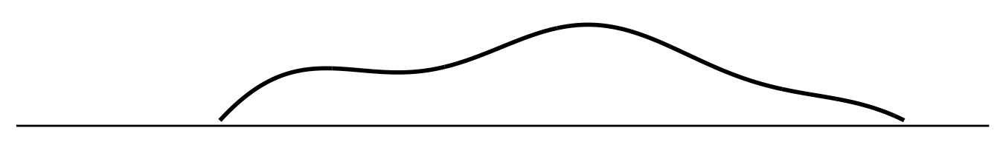
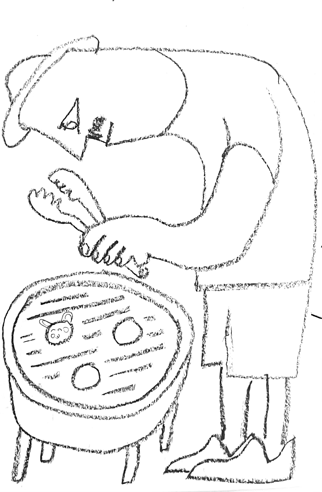

==Still a draft, don’t circulate!==
Summary.
I describe a simple model of the relationship between LLMs, humans, and the world. Large language models (LLMs) answer questions by predicting how a human would answer that question (in their training set), and humans answer questions based on their beliefs about the world.
Implication: an LLM
An LLM trained on the output of a single human will generally do worse than that human. This is because (1) the text they are trained on represents only a subset of that human’s knowledge; (2) the model fit will always be imperfect. However if the human’s answers are inconsistent then the LLM can do better simply by being less noisy.
An LLM trained on the output of multiple humans can outperform any one of them. People tend to answer only the questions that they know the answer to, so predicting the answer to a question will tend to predict the answer of an expert in that field. Thus the set of LLM-answerable questions can be thought of as including, at a minimum, the union of the questions answered by people in the training set.
An LLM can answer questions no human can answer. LLMs are not designed to explicitly make inferences about the world but the act of interpolating between observed answers will, in some circumstances, functionally operate as inference, and as a consequence the set of LLM-answerable questions can exceed the union of human-answerable questions. We already see this in LLM outputs: they can answer questions that no single human knows the answer to.
An LLM can be used to extract tacit knowledge. Much human knowledge is tacit, reflected in our lack of insight into the bases of our judgment. If an LLM can match human performance in answering questions then it will effectively make available the tacit knowledge used in those judgments, and so open up a range of capabilities much wider than any human can achieve.
Real-World Implications.
LLMs bring everybody to the knowledge frontier. An LLM can effectively serve as a consultant: it will tell you how a domain-expert would answer your question. For some problems we’ve already been able to do that for a long time, e.g. a textbook will tell you scientific advice on crop management practices, but LLMs allow for much subtler contingencies and to incorporate tacit knowledge. We should therefore expect the productivity impact of LLMs to be mainly on those who are behind the knowledge frontier, and we might also expect a compression of incomes.
AI could be used to create super-human artefacts. There has been a lot of discussion about whether AI be used to exceed human abilities to create certain artefacts, e.g. hyper-beautiful paintings, hyper-addictive clickbait, hyper-persuasive text. Using the existing architecture of LLMs, which predict human outputs, this is unlikely: they might be able to predict the objects that a very talented human would produce, but would not surpass their ability. However AI could be used to generate artfeacts indirectly: instead of predicting how a human would create such an arfect, the weights that the AI has learned could be used to find the artefact which maximizes the function of interest, e.g. hyper-persuasive, or hyper-beautiful. In this way the AI could create artefacts beyond the ability of any human.1
Graphical Argument
Puzzle: How can LLMs outperform humans if they’re trained to predict human responses?
(1) Let this curve represent the world. Each question about the world is a point on the x-axis, and the curve represents the true answer (y-axis).
(2) A human forms beliefs about the world (red curve). The human asks two questions and gets two answers (red dots) and from these they form a belief about the nature of the world (red line).

(3) Train a computer to predict the human’s answers (green curve). The human records some questions and their answers (green dots), and the computer learns to predict the human’s answers (green curve). Here the fit is perfectly because (1) the human reported all and only their direct experiences; (2) the computer’s priors about humans’ answers are the same as the human’s priors about the world. In this setup we would never expect the computer to be better than the human at answering questions about the world.

(4) Add another human (blue curve). Now we have two humans, each which asks different question of the world (red and blue dots), and each forms beliefs about the world which are accurate in the neighborhood of their experience.

(5) Let the computer predict answers from both humans (green curve). Now both humans record their experiences and the computer tries to predict human answers (green curve). Here we can see that (1) the computer’s predictions can match the humans’ responses in each of their domains of expertise; (2) the computer is better than both humans in the intermediate region, i.e. they effectively combine information from both humans.

Discussion
When do LLMs outperform humans? I only have some
- Translating between
- This depends on people talking about what they know. The performance of a computer.
Model Setup
Consider questions and answers like the following.
| question | answer |
|---|---|
| What’s the capital of Switzerland? | Geneva |
| What’s the best response if white plays c4? | c5 |
| Does this picture contain a cow? 🐄 | Yes |
| How much more likely are you to buy a coke after hearing the slogan “coke refreshes”? | 0.1% |
The model has three steps.
\[\xymatrix@C=.5cm@R=0cm{ \text{world} && \text{human} && \text{LLM}\\ *+[F:<5pt>]{\bm{w}} \ar[rr]^{\bm{a}=Q\bm{w}} && *+[F:<5pt>]{\hat{\bm{w}}} \ar[rr]^{\hat{\bm{a}}=\hat{Q}\hat{\bm{w}}} && *+[F:<5pt>]{\bar{\bm{w}}} \ar[rr]^{\tilde{a}=\tilde{q}'\bar{\bm{w}}} && \ \\ \txt{unobserved\\truth\\about\\the\\world} & \txt{answers\\to\\human\\questions} & \txt{beliefs\\formed\\by\\human} & \txt{text\\written\\by\\human} & \txt{LLM\\model\\of\\human\\text} & \txt{LLM's\\answers\\to\\new\\questions} }\]
Questions and answers. We will model everything as a set of questions and their answers. A question is defined by a set of binary attributes (\(q_1,\ldots,q_n\in\{-1,1\}\)), and the answer is a linear function of those attributes given some unobserved weights \(w_1,\ldots,w_n\):
\[\begin{aligned} \ut{\bmatrix{a^1 \\ \vdots \\ a^m}}{answers} = \ut{\bmatrix{q_1^1 w_1 + \ldots q_n^1w_n \\ \vdots \\ q_1^m w_1 + \ldots q_n^mw_n}}{questions} \end{aligned}\]
Human beliefs. After observing a set of question and their real-world answers the human will form beliefs about the weights \(w_1,\ldots,w_n\). We can explicitly write the human posteriors if we assume their priors are Gaussian and i.i.d. (\(\bm{w}\sim N(0,\sigma^2I)\)):2 \[\begin{aligned} \bm{a} &= Q\bm{w} && \text{(questions \& answers given true weights $\bm{w}$)}\\ \hat{\bm{w}} &= Q'(QQ')^{-1}\bm{a} && \text{(human estimate of true weights $\bm{w}$)} \end{aligned}\]
I will assume that the number of unobserved weights is large relative to the human’s experience (\(n\gg m\)), so the human will gradually learn more about reality as she observes the answer to more questions, and will be able to perfectly answer any question she’s seen before, but will never learn the full set of weights.
Computer beliefs. Suppose that humans write down some set of question and answer them given their beleifs. We use that text to train a computer to predict the answer given any question, and the computer likewise assumes a linear model with i.i.d. Gaussian weights. Then we can explicitly write the computer-estimated weights:
\[\begin{aligned} \hat{\bm{a}} &= \hat{Q}\hat{\bm{w}} && \text{(human-generated questions \& answers)}\\ \bar{\bm{w}} &= \hat{Q}'(\hat{Q}\hat{Q}')^{-1}\hat{\bm{a}} && \text{(computer estimate of human weights $\hat{\bm{w}}$)} \end{aligned}\]
Computer answers. Finally we can ask the computer a new question, \(\tilde{q}\), and observe its answer: \[\begin{aligned} \tilde{a} &= \tilde{\bm{q}}'\bar{\bm{w}} && \text{(computer answer to a novel question $\tilde{\bm{q}}$)}\\ \end{aligned}\]
Model Implications
- If one human records all their observations then the computer will perfectly imitate them.
- Suppose that there is one human and they write down all of their observations, \(\hat{Q}=Q\). Then the computer’s beliefs will be the same as the human’s beliefs (\(\hat{\bm{w}}=\bar{\bm{w}}\)), and so the computer will answer every question exactly as the human does, though neither knows the truth (\(\bar{\bm{w}}\neq\bm{w}\)).
- If humans do not record all their observation then the computer will perform worse.
- Suppose humans only write down some of their observations, i.e. \(\hat{Q}\) is a row-wise subset of \(Q\). Then computers and humans will give the same answers for any question in the training set, but outside of that set computers will generally do worse than humans. And so for every question \(\bm{q}\) the computer will do worse in expectation: \[E[\ut{(\bm{q}\bm{a}-\bm{q}\bar{\bm{a}})^2}{computer error}]\geq E[\ut{\bm{q}(\bm{a}-\hat{\bm{a}})}{human error}].\]
- If there are multiple humans then the computer will outperform them both.
- Suppose there are two humans who each observe answers to different question, \(Q_A\) and \(Q_B\), and they both write them all down, so \(\bar{Q}=(\smallmatrix{Q_A\\Q_B})\) and \(\bar{\bm{a}}=(\smallmatrix{Q_A\bm{w}\\Q_B\bm{w}})\). Now the computer clearly has superior information to either human, and so for both \(i\in\{1,2\}\) and every question \(\bm{q}\) we can write: \[E[\ut{(\bm{q}\bm{a}-\bm{q}\bar{\bm{a}})^2}{computer error}]\leq E[\ut{\bm{q}(\bm{a}-\hat{\bm{a}}_i)}{human error}].\]
- If there are multiple humans then the computer can answer question no human can answer.
-
Suppose two humans observe the answers to the following questions: \[\begin{aligned} Q_A &= \bmatrix{1 & 1 & 1 \\ 1 & -1 & 1} \\ Q_B &= \bmatrix{1 & 1 & 1 \\ 1 & 1 & -1} \end{aligned}\] The first human will learn the exact value of \(w_2\), and the second human will learn the exact value of \(w_3\), but neither will learn both, and so neither could perfectly predict the answer to this question: \[\begin{aligned} \tilde{q} &= \bmatrix{1 & -1 & -1} \\ \end{aligned}\]
However if they both recorded their observations, so the computer observes \(\bar{\bm{a}}=(\smallmatrix{Q_1\bm{w}\\Q_2\bm{w}})\), the computer will be able to infer both \(w_2\) and \(w_3\), and thus will be able to perfectly answer \(\tilde{q}\).
We can see this behaviour in LLMs: they sometimes combine a pair of facts or a pair of abilities which no single human has access to, e.g. when an LLM translates between two languages, for which there exists no human speaker of both.
- If humans write outside their expertise then the computer will do worse.
-
In the cases above we assumed that the two humans recorded only what they directly observed. This means the computer essentially had a window directly to the world. However the humans could instead have written down their estimated answers to other questions. Suppose they both wrote down answers to every possible question, then the computer would learn the average of the two human’s estimated weights:3 \[\bar{\bm{w}}=\frac{1}{2}\hat{\bm{w}}_A+\frac{1}{2}\hat{\bm{w}}_B.\]
Here the computer will do worse than the two humans on the original questions, \(Q_A\) and \(Q_B\).
The implication is that LLMs work so well only because people tend to write about what they know. Put another way, when an LLM answers a question, it will not predict the answer given by the average person, but will predict the answer given by people who are likely to answer that question in the real world, and luckily those people tend to be people who are subject-matter experts.
- If humans have tacit knowledge, the computer model can outperform humans in creation of new artefacts.
-
Suppose humans have tacit knowledge of the world, we can model this with two separate sets of beliefs: \[\begin{aligned} \hat{\bm{w}}^T &= \text{tacit knowledge}\\ \hat{\bm{w}}^E &= \text{explicit knowledge}\\ \end{aligned}\]
When the human encounters a new question \(\tilde{\bm{q}}\) they will use their tacit knowledge to form an estimate of the answer, \(\hat{a}=\tilde{\bm{q}}'\hat{\bm{w}}^T\). For simplicity assume tacit knowledge is perfectly accurate \(\hat{\bm{w}}^T=\bm{w}\), and explicit knowledge is imperfect.
The distinction becomes important when we want to create a new question. Here it’s useful to interpret \(\bm{q}\) not as a question but as an artefact, e.g. text or image, and \(\bm{a}=\bm{q}'\bm{w}\) represents some abstract property, e.g. how beautiful or how rhythmic. Suppose we want to chosose \(\bm{q}\in\{-1,1\}^n\) to maximize \(\bm{w}\bm{q}\). If we had perfect access to our beliefs \(\bm{w}^T\) this would be simple, however if we have access only to imperfect explicit knowledge \(\hat{\bm{w}}^E\), the artefact which maximizes that function will not generally be the one which maximizes \(a\).
Here the computer model is less constrained. Suppose the computer has observed sufficiently many questions until they have perfectly learned the tacit knowledge, \(\bar{\bm{w}}=\hat{\bm{w}}^T\). Then if computation is free the computer could be used to query every single \(\bm{q}\in\{-1,1\}^n\) to find the best possible artefact.
Derivation
\[\begin{aligned} Q &= \bmatrix{q_1^1 & \ldots & q^1_n \\ & \ddots \\ q^m_1 & \ldots & q^m_n} && \text{(set of questions)} \\ w' &= \bmatrix{w_1 \ldots w_n} \\ a &= \bmatrix{a^1 \\ \vdots \\ a^m} = \bmatrix{q_1^1 w_1 + \ldots q_n^1w_n \\ \vdots \\ q_1^m w_1 + \ldots q_n^mw_n} \\ \end{aligned}\]
\[\begin{aligned} \bm{w} &\sim N(0,\Sigma) && (n\times 1\text{ vector of parameters of the world)}\\ Q &\in \{-1,1\}^{n\times m} && \text{($m$ questions, each has $n$ binary parameters)}\\ \ut{\bm{a}}{$m\times1$} &= \ut{Q}{$m\times n$}\ut{\bm{w}}{$n\times1$} && \text{(answers provided by the world)}\\ \hat{\bm{w}} &= E[\bm{w}|Q,\bm{a}] && \text{(human beliefs about the world)}\\ &= \ut{\Sigma Q'}{$Cov(\bm{w},\bm{a})$} (\ut{Q\Sigma Q'}{$Var(\bm{a})$})^{-1} \bm{a} \end{aligned}\]
With one observation and two weights. Suppose \(m=1, n=1\), then we have: \[\begin{aligned} Q &= \bmatrix{q_1 & q_2} \\ \bm{a}' &= \bmatrix{a} \\ \bm{w}' &= \bmatrix{w_1 & w_2 } \\ \Sigma &= \bmatrix{\sigma_1^2 & \rho \\ \rho & \sigma_2^2}\\ \Sigma Q' &= \bmatrix{ \sigma_1^2q_1 + \rho q_2 \\ \rho q_1 + \sigma_2^2 q_2 } \\ Q\Sigma Q' &= \bmatrix{ \sigma_1^2q_1^2 + 2\rho q_1q_2 + \sigma_2^2 q_2^2} \\ \hat{\bm{w}}=\Sigma Q'(Q\Sigma Q')^{-1}\bm{a} &= \bmatrix{ \frac{\sigma_1^2q_1 + \rho q_2}{\sigma_1^2q_1^2 + 2\rho q_1q_2 + \sigma_2^2 q_2^2} \\ \frac{\rho q_1 + \sigma_2^2 q_2}{\sigma_1^2q_1^2 + 2\rho q_1q_2 + \sigma_2^2 q_2^2}} a \end{aligned} \]
We can normalize \(q_1=q_2=1\), then we have \[\hat{w}_1 = \frac{\sigma_1^2+\rho}{\sigma_1^2+2\rho+\sigma_2^2}a,\]
This means we are dividing up responsibility for the answer (\(a\)) into the contributions of each component, nice and simple.
With two observations and one weight. Here we’re over-identified. \[\begin{aligned} Q &= \bmatrix{q^1 \\ q^2} \\ \bm{a} &= \bmatrix{a^1 \\ a^2} \\ \bm{w} &= \bmatrix{w } \\ \Sigma &= \bmatrix{\sigma^2 }\\ \Sigma Q' &= \bmatrix{ \sigma^2 q^1 & \sigma^2 q^2 } \\ Q\Sigma Q' &= \bmatrix{ \sigma^2 q^1q^1 & \sigma^2q^1q^2 \\ \sigma^2q^1q^2 & \sigma^2q^2q^2} && \text{(this matrix doesn't have an inverse)} \end{aligned} \]
With noise. Suppose we only observe the answers with random noise, then we get this: \[\begin{aligned} \ut{\bm{a}}{$m\times1$} &= \ut{Q}{$m\times n$}\ut{\bm{w}}{$n\times1$} + \ut{\bm{e}}{$n\times 1$} \\ \bm{e} &\sim N(\bm{0},s^2I_m) && \text{(i.i.d. noise w variance $s^2$)}\\ Cov(\bm{w},\bm{a}) &= \Sigma Q' \\ Var(\bm{a}) &= Q\Sigma Q' + s^2I_m \\ E[\bm{w}|Q,\bm{q}] &= \Sigma Q'(Q\Sigma Q' + s^2I_m)^{-1}\bm{a} \end{aligned}\]
Compare to Bayesian linear regression. We can compare this result to Bayesian linear regression (e.g. Wikipedia): \[\begin{aligned} \bar{\beta} &= \Sigma Q'(Q\Sigma Q' + s^2I_m)^{-1}\bm{a} && \text{(our result)} \\ \tilde{\beta} &= (Q'Q+s^{2}\Sigma^{-1})^{-1}Q'\bm{a} && \text{(Bayesian linear regression)}\\ \end{aligned}\]
I believe that these can be shown to be equivalent by the matrix inversion lemma, though I haven’t confirmed this. There’s a note online that appears to show equivalence.
Footnotes
This is roughly how image synthesis algorithms work: after training a model to recognize images, new images can be created by maximizing the learned weights.↩︎
I am assuming \(\bm{w}\) has zero-mean and is i.i.d. just to cut down on notation, the results all hold for the more general multivariate Normal case.↩︎
We would have to augment the computer’s learning rule to allow for noise in answers - I need to confirm that the weighting will be exactly 1/2.↩︎